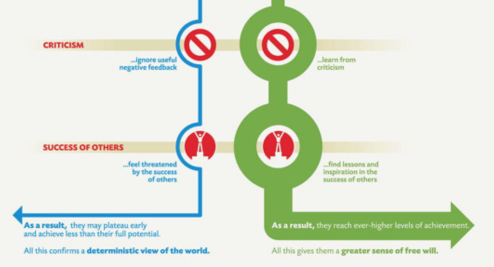

Dweck, C. (2006). Mindset: The New Psychology of Success. Random USA. ISBN: 978-0345472328
Intelligence can be developed! Please, abandon your prejudices on Computational Thinking and/or Programming, be an hacker: one who enjoys the intellectual challenge of creatively overcoming or circumventing limitations
Did some of you have experienced any of the following issues in the past? – Raise your hands if you were obliged:
to buy one or more books
to attend mandatorily a large part of the course for attending the final exam
not to participate to an exam session for some informal rule imposed by the professor
not to receive the maximum score if you attended the exam without addending the lectures
Let's see the rule of this course
No text books needed for passing the exam - the material can be found on the GitHub repository of the course
If you cannot attend, do not attend (even if attendance is recommended: you can ask questions)
At least six exam sessions per academic year
Max score one can obtain is 42 (out of 30)
All the material is available in the GitHub repository of the course at https://github.com/comp-think/2018-2019/
Two kinds of objects:
slides: a summary of the topics introduced in the lectures - available usually a few minutes before each lecture
lecture notes: an extensive text describing the topics introduced in all the lectures - available in advance for each lecture
Have you found a mistake in the material? Please write me an email at silvio.peroni@unibo.it, or comment it directly on Google Docs
A Google group has been set up where I will send all the communication for the course: compthink1819@googlegroups.com
You need to mandatorily subscribe to it
For subscribing to the mailing list, one has to send me an e-mail (silvio.peroni@unibo.it) asking for it, and I'll add him/her directly to the list
I will subscribe only UniBo emails, i.e. ending with @studio.unibo.it – thus, please use your UniBo email for communicating with me
We will use the GitHub repository of the course for a series of activities, such as exercises and raising issues
Thus, please, create a new account on GitHub: https://github.com/join
Once logged into GitHub, go to the issue page of the course repository, and then feel free to add and respond to issues there
A very introductory guide to GitHub can be find online
Theoretical part (30 hours), where I will introduce all the notions related to the course - no computer needed: every Monday, Wednesday and Friday for 15 lectures (today included)
Laboratorial part (16 hours), where Dr. Marilena Daquino will have some practical lectures on programming languages - computer needed here
| November | December | ||
|---|---|---|---|
| 12/11/18 | Introduction to Computational Thinking | 03/12/18 | Divide and conquer algorithms |
| 14/11/18 | Algorithms | 04/12/18 | Laboratory |
| 16/11/18 | Computability | 05/12/18 | Dynamic programming algorithms |
| 19/11/18 | Programming Languages | 06/12/18 | Laboratory |
| 22/11/18 | Laboratory | 10/12/18 | Organising information: trees |
| 23/11/18 | Organising information: ordered structures | 11/12/18 | Laboratory |
| 26/11/18 | Brute-force algorithms | 12/12/18 | Backtracking algorithms |
| 27/11/18 | Laboratory | 13/12/18 | Laboratory |
| 28/11/18 | Organising information: unordered structures | 14/12/18 | Project presentation |
| 29/11/18 | Laboratory | 17/12/18 | Organising information: graphs |
| 30/11/18 | Recursion | 18/12/18 | Laboratory |
| 19/12/18 | Greedy algorithms | ||
Two partial written examinations – they are not mandatory, but recommended – held during the lectures (no dates defined, surprise surprise): score <= 5 for each examination (max. score: 10)
Implementation of a project in Python: score <= 8
Oral colloquium on the project: -8 <= score <= 8
Final written examination: score <= 16
Total max. score: 42 (32 without the partial written examinations) out of 30
Usually, during one of the last lectures of the course, you will be asked to fill-up a questionnaire on the organisation of the course and related stuff - it is anonymous, of course
Please, do it carefully and honestly, since it is one of the most important inputs I will have to understand what can be improved in the next year course
The fact that the course of this year is slightly different from the one held during the previous year one is mainly due to the comments I have received through these questionnaires
Stephen Toulmin (1958). The Uses of Arguments. Cambridge University Press. ISBN: 978-0521827485
The purpose of these studies is to raise problems, not to solve them
Please do ask questions
There are no stupid questions
My answers can be odd though, sometime
Thus, in order to avoid such odd answers, I could ask you to be patient and wait for the next lecture, so as to provide you with the best possible answer ever